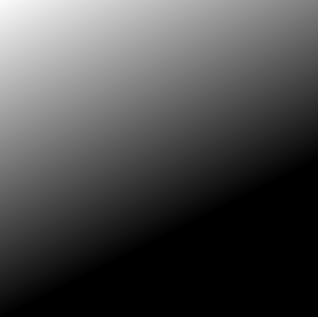

ShaderToy常见代码解释 (收录中)
Table of Contents
在编程这一方面, 个人认同这一个观点: 要想实现某个东西最有效的办法是抄别人的代码, 并且要抄得明白.
不要看这句话看似很 low, 它里面其实有这么一些对应关系, "抄得明白"对应知道原理, "抄别人代码"对应实践.
对于 ShaderToy 也是一样的, 你想像那些前辈一样实现酷炫的效果, 就得脸皮厚一点去 抄明白 他们的代码, 大胆承认抄别人的代码.
抄的时候要明白代码的每一部分的含义: 对这部分代码修改会产生什么影响, 了解影响是怎么变化的, 以此建立起直观的理解.
并且要多抄, 抄到不用看就能随手写出来, 知道每一处代码的作用能按照自己的意愿进行修改, 到了这种地步就说明知识已经被内化了.
这篇笔记就是用来记录"明白"这一过程.
另外, 这里建议有两点建议:
- 参考一下 The Book of Shaders 这本书(截止目前为止还没写完);
如果在阅读其它人的代码时看到一些自己不理解的函数(
shader的函数基本上就是数学函数的翻译), 使用绘图工具绘制其函数图像来了解其行为.这里推荐 GraphToy 和 Maxima (
Maxima是开源免费的, 有钱人可以选择像Mathematica或者MATLAB之类的商业软件).GraphToy提供了GLSL内置函数定义, 专门用于Shader的编写辅助.和
GraphToy不一样,Maxima并不提供GLSL的内置函数定义, 它是一个代数计算系统, 专门解决数学计算问题, 也包括画图功能,想要在
Maxima使用GLSL的内置函数需要自己定义(,GLSL的内置函数的定义都很简单), 能够自定义函数则是推荐它的理由, 用来弥补
GraphToy的不足. 这篇笔记会提供一些函数的Maxima定义.
1. 常见的 UV 计算
1.1. UV - 计算片元在屏幕上所对应的 UV 坐标
写于 2024/3/3
OpenGL 的 UV 坐标是一个左下角为原点, 向上为 \(U\), 向右为 \(V\), 且范围都是 \([0, 1]\) 的坐标系.
在 ShaderToy 中, 人们把整个画面看作是一张大贴图, 片元就是该大贴图上面的一个纹理像素(texel).
片元理所当然地有一个 UV 坐标, 可以通过片元坐标 \(gl\_fragCoord\) 和屏幕分辨率 \(iResolution\) 计算出来.
vec2 uv = gl_FragCoord.xy / iResolution.xy; // [0.0, 1.0]
当要注意的是, 为了方便作图, 片元的 UV 并非就要固定在 \([0.0, 1.0]\) 之间.
有时候为了实现某些目的, 需要对 UV 做一些列变换.
比如把纹理坐标空间的原点从左下角平移到中心,
vec2 uv = (gl_FragCoord.xy / iResolution.xy) - 0.5; // [-0.5, 0.5]
这一步开始已经把一个屏幕平均分成 4 份了.
\([-0.5, 0.5]\) 分别在 \(u\) 和 \(v\) 两个方向上分为 \([-0.5, 0]\) 和 \([0, 0.5]\) 两个区间.
因此, \(2 \times 2 = 4\) 份.
把新的纹理坐标空间的范围拓展到 \([-1.0, 1.0]\),
vec2 uv = 2 * ((gl_FragCoord.xy / iResolution.xy) - 0.5); // [-1.0, 1.0] // 可简化成 vec2 uv = 2 * (gl_FragCoord.xy / iResolution.xy) - 1;
到目前为止, 我们的 UV 计算都是针对屏幕分辨率比例是一比一的情况.
在非一比一情况下绘制个圆形会导致圆变椭圆, 这是因为 \(UV\) 两分量的范围比例和屏幕分辨率比例对不上, 导致出现拉伸的情况.
解决方法很简单, 以屏幕分辨率比例为准, 对 \(UV\) 长的那一方维度分量进行补偿, 使得 \(UV\) 分量的范围比例和屏幕分辨率比例一致.
原本的 \(UV\) 范围比例固定是 \(\frac{x_{uv}}{y_{uv}} = 1\), 而屏幕分辨率比例是 \(\frac{x_{iResolution}}{y_{iResolution}}\),
如果屏幕是 \(X\) 轴比较长, 那么 \(UV\) 就要针对 \(x\) 分量进行补偿才能和屏幕分辨率一致: \(\frac{x_{uv} \times \frac{x_{iResolution}}{y_{iResolution}}}{x_{uv}} = 1 \times \frac{x_{iResolution}}{y_{iResolution}} = \frac{x_{iResolution}}{y_{iResolution}}\),
如果屏幕是 \(Y\) 轴比较长, 那么 \(UV\) 就要针对 \(y\) 分量进行补偿才能和屏幕分辨率一致: \(\frac{x_{uv}}{y_{uv} \times \frac{y_{iResolution}}{x_{iResolution}}} = 1 \div \frac{y_{iResolution}}{x_{iResolution}} = \frac{x_{iResolution}}{y_{iResolution}}\).
你可能会问既然要保证两者比例一样, 为什么还要讨论哪根轴较长呢?
从公式上来看, 如果 \(Y\) 比较长的话, 用 \(1 \times \frac{x_{iResolution}}{y_{iResolution}}\) 来计算不也是一样可以保证两者比例一致吗?
但是别忘记了 \(UV\) 本身就是依赖 \(iResolution\) 计算出来的, 因此这个数字 \(1\) 本身就依赖于 \(iResolution\), 下面的代码可以证明这点.
vec2 uv = 2 * (gl_FragCoord.xy / iResolution.xy) - 1; // [-1.0, 1.0] if (iResolution.x > iResolution.y) { // 如果屏幕的 X 轴比 Y 轴长 uv.x *= iResolution.x / iResolution.y; } else { // 如果屏幕的 Y 轴比 X 轴长, 或两者相等 uv.y *= iResolution.y / iResolution.x; }
到目前为止我相信大部分人都能看得懂, 但 ShaderToy 上的例子大部分都是把这段代码简化成一句的.
现在来逐个分析,
vec2 uv = 2 * (gl_FragCoord.xy / iResolution.xy) - 1; /* 等同于 uv = (2 * gl_FragCoord.xy) / iResolution.xy - iResolution.xy / iResolution.xy uv = (2 * gl_FragCoord.xy - iResolution.xy) / iResolution.xy 同时可以拆开来看 uv.x = (2 * gl_FragCoord.x - iResolution.x) / iResolution.x uv.y = (2 * gl_FragCoord.y - iResolution.y) / iResolution.y */ if (iResolution.x > iResolution.y) { // 如果屏幕的 X 轴比 Y 轴长 uv.x *= iResolution.x / iResolution.y; /* 等同于 uv.x = (2 * gl_FragCoord.x - iResolution.x) / iResolution.x * iResolution.x / iResolution.y uv.x = (2 * gl_FragCoord.x - iResolution.x) / iResolution.y 如果和 y 分量合并一起计算, 那么就是 uv = (2 * gl_FragCoord.xy - iResolution.xy) / iResolution.y */ } else { // 如果屏幕的 Y 轴比 X 轴长, 或两者相等 uv.y *= iResolution.y / iResolution.x; /* 等同于 uv.y = (2 * gl_FragCoord.y - iResolution.y) / iResolution.y * iResolution.y / iResolution.x uv.y = (2 * gl_FragCoord.y - iResolution.y) / iResolution.x 如果和 x 分量合并一起计算, 那么就是 uv = (2 * gl_FragCoord.xy - iResolution.xy) / iResolution.x */ } /* 综合两种情况来看就是 uv = (2 * gl_FragCoord.xy - iResolution.xy) / min(iResolution.x, iResolution.y) */
所以, ShaderToy 上有不少例子都是有这一句(或类似的).
vec2 uv = (2 * gl_FragCoord.xy - iResolution.xy) / min(iResolution.x, iResolution.y);
在大部分的 ShaderToy 例子中, UV 计算是基础且重要的东西, 这个小节所介绍的 UV 计算其实是 UV 补偿, 解决画面拉伸的问题.
还会介绍一些其它的 UV 计算来实现不同的效果.
1.2. UV计算 - 平铺(tiling)
这里的平铺就是和计算机的桌面壁纸里的平铺是一个概念: 当一张壁纸不能把桌面铺满, 那么就用重复若干张壁纸铺满桌面.
Shader 编程也可以平铺.
我们可以换个角度来思考, 默认情况下, 一个像素所对应 \(UV\) 坐标是 gl_FragCoord.xy / iResolution.xy, 分量的范围是 \([0, 1]\), 这是针对与整个屏幕来说的.
想要平铺, 我们只要在屏幕的范围内复制多几个 \([0, 1]\) 范围的 \(UV\) 坐标空间就好了.

Figure 1: 重复了 4 个 \([0, 1]\) 范围的 \(UV\) 坐标空间
话虽如此, 具体应该怎么做呢? 虽然没有标准答案, 但还是有基本法的.
从原本映射关系来看是 \([x_{min}, x_{max}] \rightarrow [0, 1]\) 和 \([y_{min}, y_{max}] \rightarrow [0, 1]\),
想要在更小的屏幕范围内应该一个 \(UV\) 空间, 只要改变 \(x_{max}\) 和 \(y_{max}\) 的值就可以了.
对于看左上角的 \(UV\) 空间, 可以通过 gl_FragCoord.xy / (iResolution.xy / 2), 这里就是把 \(x_{max}\) 和 \(y_{max}\) 分别改变为 iResolution.x / 2 和 iResolution.y / 2.
接下来的问题就是如何让构造出另外三个 \(UV\) 空间呢?
因为当 gl_FragCoord.x 超出 iResolution.x / 2 时, gl_FragCoord.x / (iResolution.x / 2) 的值就是大于 1 的浮点数,
我们的目标是让其它三个 \(UV\) 空间的分量范围为 \([0, 1]\), 方法很简单, glsl 的内置函数 fract 可以获取浮点数的小数部分,
比如 fract(1.1) 等于 0.1, fract(2.1) 也是等于 0.1, 从而形成一个以 0 到 0.999… (没到 1) 为一个周期的周期序列.
其实可以把第下一个周期头部的 0 看作是上一个周期的 1.
原因很简单, 假设现在经过划分得到两个周期, 那么
fract(x)会得到这样的一个序列(, 以 0.1 为步长):
[0, 0.1, 0.2, ..., 0.9], [0(1), 0.1, 0.2, ..., 0.9], 0(2)
这样就可以让其它 \(UV\) 空间的分量范围也处于 \([0, 1)\) 之间,
综上所述, \(UV\) 的计算方式就变成这样:
int div_num = 2; vec2 uv = fract(gl_FragCoord.xy / (iResolution.xy / div_num)); /* or vec2 uv = fract(gl_FragCoord.xy / iResolution.xy * div_num); */
这并非唯一的方法, 事实上 只要是周期函数都可以获取周期序列来进行平铺, 比如 cosine, sine 和 modulo, 等等.
cosine 和 sine 的用法和 fract 差不多, 基本上把 fract 替换就可以了:
int div_num = 2; // 别忘记控制好周期 vec2 uv = cos(gl_FragCoord.xy / (iResolution.xy / div_num * 2 * PI)); /* or vec2 uv = fract(gl_FragCoord.xy / iResolution.xy * div_num * 2 * PI); */
模运算(modulo)有一点不同:
int div_num = 2; float period = 1.0; vec2 uv = mod(gl_FragCoord.xy / (iResolution.xy / div_num), period); /* or vec2 uv = mod(gl_FragCoord.xy / iResolution.xy * div_num, period); */
并且模运算的周期可以用来对 \(UV\) 空间进行等比缩放, 如果把 period 定义为 2.0, 那么 \(UV\) 的分量范围就是 \([0, 2]\).
2. GLSL 内置函数
2.1. 函数 - smoothstep
从这里开始的后面几个章节都会介绍一些常用(或者一些光看名字不知道做啥)的
GLSL内置函数, 不过并不会介绍一些典型的数学函数, 比如sin/cos/atan这些,这些直接去看数学书就好, 介绍它们会拉长笔记的篇幅.
这些内置函数均可用在
Fragment Shader中.
\(smoothstep\) 函数的定义等价如下:
/* genType clamp(genType x, genType minValue, genType maxValue) equals min(max(x, minValue), maxValue) */ genType smoothstep(genType edge0, genType edge1, genType x) { genType t = clamp((x - edge0) / (edge1 - edge0), 0.0, 1.0); return t * t * (3.0 - 2.0 * t); }
\(t\) 是从 \(edge0\) 到 \(edge1\) 的插值, 结果在 \([0, 1.0]\) 内.

Figure 2: x, edge0 以及 edge1 三者的关系
\(smoothstep\) 的返回值 \(f(t) = 3t^{2} - 2t^{3}\) 是一个最高次项为 3 的多项式函数,
其一阶导数为 \(f^{'}(t) = 6t - 6t^{2} = 6t(1 - t)\), 令 \(f^{'}(t) = 0\) 可以求得两个驻点的 \(t\) 分量: \(0\) 和 \(1\).
再求出二阶导数 \(f^{''}(t) = 6 - 12t\), 分别把驻点的 \(t\) 分量分别代入到其中, 分别得到 \(f^{''}(0) = 6 > 0\) 和 \(f^{''}(1) = -6 < 0\).
也就是说函数 \(f(t)\) 在 \(t = 0\) 为极小值, 在 \(t = 1\) 为极大值, \(t\) 在 \([0, 1]\) 这个区间内是单调递增的.
又刚好 \(t \in [0, 1.0]\), 因此, \(f(t)\) 最小值为 \(f(0) = 0\), 最大值为 \(f(1) = 1\).
我们再令 \(f^{''}(t) = 0\) 尝试求出函数 \(f(t)\) 在 \([0, 1]\) 区间的拐点, 解得 \(t = 0.5\).
把 \(t = 0.5\) 代入原函数得到 \(f(t=0.5) = 3 \times 0.5^{2} - 2 \times 0.5^{3} = 0.5\), 得到拐点 \((0.5, 0.5)\).
最后求该点处的切线: \(k = f^{'}(0.5) = \frac{y - 0.5}{x - 0.5} = 1.5 \rightarrow y = 1.5x - 0.25\).
该切线的导数 \(k^{'} = 1.5\), 表明了函数 \(f(t)\) 在 \(t = 0.5\) 处的斜率的变化率(也就是 \(f^{''}(t)\))是在逐渐增加,
在 \(t = 0.5\) 的左边 \(f^{''}(t) > 0\) (函数图像 \(f\) 在 \(x = 0.5\) 左边为上凹), 在右边则是 \(f^{''}(t) < 0\) (函数 \(f\) 在 \(x = 5\) 的右边为下凹). 因此, 点 \((0.5, 0.5)\) 的确是拐点.
因此, \(smoothstep\) 是一个从 \([edge0, edge1]\) 到 \([0, 1]\) 的映射, 一条变化率为先增后减的曲线.
最终的函数图像如下:
如果仔细看文档的话你会发现一句: "Results are undefined if edge0 ≥ edge1".
然而实践发现: \(edge0 \gt edge1\) 的时候,
GraphToy所绘制的 \(smoothstep\) 函数图像表面依然是有结果的.比如, 你可以尝试把上面的 \(smoothstep(0.0, 1, x)\) 换成 \(smoothstep(1, 0.0, x)\) 观察一下: 函数图像会镜像翻转, 从 1 到 0 之间进行插值.
经过搜索, 发现在 GLSL 1.10 中 \(smoothstep\) 是没有这一句的, 这一句是从 GLSL 1.20 开始才有的.
目前不确定这一句是不是只对一些新版本的
GLSL生效, 还是说有些GLSL的实现没有严格按照标准来.其实在数学层面来看, \(edge0 \ge edge1\) 不会导致函数
undefined的, 目前实践下来也没有出现undefined的情况.
2.1.1. The Book Of Shaders 的 smoothstep 函数绘制 Shader 解析
#ifdef GL_ES precision mediump float; #endif #define PI 3.14159265359 uniform vec2 u_resolution; uniform vec2 u_mouse; uniform float u_time; float plot(vec2 st, float pct) { return smoothstep(pct-0.02, pct, st.y) - smoothstep(pct, pct+0.02, st.y); } void main() { vec2 st = gl_FragCoord.xy / u_resolution; // smooth interpolation between 0.1 and 0.9 float y = smoothstep(0.1, 0.9, st.x); vec3 color = vec3(y); float pct = plot(st, y); color = (1.0 - pct) * color + pct * vec3(0.0, 1.0, 0.0); gl_FragColor = vec4(color, 1.0); }
这段 shader 的算法做的事情很简单: 绘制出 \(smoothstep(0.1, 0.9, x)\) 的函数图.
做法很简单: 首先计算出 \(st.x\) 经过 \(smoothstep(0.1, 0.9, x)\) 映射后的值 \(y\), 但这样的话所有 \(x\) 分量相同的片元在经过映射后拥有相同的 \(y\), 我们需要判断片元是否处于函数上.
\(plot\) 函数就是判断片元是否在函数上的.
上面代码中的 \(plot\) 函数其实是优化过了的, 先看未经优化的版本:
在计算出经过映射的 \(y\) 后, 对片元的 \(y\) 分量和映射 \(y\) 进行对比, 如果两者相等就说明片元在函数上.
但由于它们两者都是浮点数, 没法直接判断是否相等, 因此只能认为当两者相差小于一个边界时为相等.
float plot(vec2 st, float pct) { return abs(pct - st.y) < 0.01 ? 1.0: 0.0; /* 或者使用 step 函数 step(abs(pct - st.y), 0.01); type = float/vec2/vec3/vec4 type step(type edge, type x) equals returnValue[i] = edge[i] > x[i] ? 0.0: 1.0; */ // return step(abs(pct - st.y), 0.01) ? 1.0: 0.0; }
不过 这样绘制出来的函数图像很生硬, 边界有锯齿, 过渡不够平滑(, 改节标题连接上面的代码可以修改看效果).
优化后的 \(plot\) 函数就是为了解决过渡不平滑的问题而出现的:
\(smoothstep(pct-0.02, pct, st.y)\) 的函数图像是 \(smoothstep(0.02, pct+0.02, st.y)\) 图像的左平移, 在水平方向上两者相差 \(0.02 \times 2\) 个距离.
在 \([ptc-0.02, pct+0.02]\) 区间的某一个位置上, 两个图像 在垂直方向上 相差的距离的变化规律是先增后减少, \(0.02\) 决定着变化率, 越大变化越小, 线条越粗.
如果稍微了解过微积分的话, 你应该能感觉到
plot函数像是一个求导函数, 事实上它就是.
我们也可以使用
Maxima进行绘图,Maxima是一个CAS软件, 除了能画图以外还能帮助你进行强大的数学运算.个人十分推荐掌握这个工具.
/* 定义 smoothstep 函数 */ smoothstep(l, u, x) := block( t: min(max((x - l) / (u - l), 0.0), 1.0), return (t * t * (3 - 2 * t)) )$ /* 绘图 */ plot2d([smoothstep(0.1-0.5, 0.1, x), smoothstep(0.1, 0.1+0.5, x), smoothstep(0.1-0.5, 0.1, x) - smoothstep(0.1, 0.1+0.5, x) ], [x, -2, 2]);
通过 \(smoothstep(0.1-0.5, 0.1, x) - smoothstep(0.1, 0.1+0.5, x)\) 的图像可以得知, 优化后的 \(plot\) 的变化相对平滑一点.
回到优化后的 \(plot\) 上, 它的作用就是让 \(st.y\) 在 \([y-0.02, y+0.02]\) 范围内进行插值, 以先增后减的变化率返回 \([0, 1]\) 的值, 而不是像未优化版只返回 \(0\) 或 \(1\) 那样一刀切.
2.1.2. 编写 Fragment Shader 的思路
刚开始学习 Fragment Shader 时, 我只知道最终目的是为了设置片元的颜色, 然而并不知道如何绘制出自己想要的图像.
即便去学习别人的代码, 也只能在有参考的情况下写的出来, 完全不知道别人是如何想出来的, 也不知道所谓的阅读代码中学习要学什么内容.
相信很多经历过新手期的人都和我一样认为阅读别人的代码就是要学习其中的数学概念, 其实也没错, Fragment Shader 多少得涉及一些数学概念.
然而, 这解释不了为什么有些数学好的人也不能写出自己想要的效果.
在经过一定量的阅读以及大量的总结后, 发现了一个事实: 不管实现什么效果, 任何 Fragment Shader 在结构上都有一个固定的模式.
个人认为那些数学好的人没能实现自己想要的效果是因为不了解这个模式, 虽然没办法证明这个观点, 但相信你在看完这个模式后会认同我这个观点.
开始吧:
- 确定好
UV坐标系: 原点在哪, 范围在哪. 时刻记住 片元原本的
UV坐标 \(st_{0}\) 坐标是gl_FragCoord.xy / u_resolution;代码中的变量 \(st\) 可以看作是片元的一个新属性, 其初始值为 \(st_{0}\) 的值, 但是 \(st\) 可能会在经过计算后发生变化.
因此, 在
Fragment Shader里面, 一个片元包含始终有一个关系: \(f(st_{0}) = st\).最后,
Fragment Shader绘图的关键在于如何根据 \(st\) 来计算出片元的颜色, 粗略地讲就是 位置决定颜色.函数 \(f\) 就是针对 \(st\) 的计算, \(f\) 可以由多个更小的一系列的函数构成, 比如:
\(f(st_{0}) = st\)
\(\Downarrow\)
\(f_{0}(st_{0}) = st_{1}\)
\(f_{1}(st_{1}) = st_{2}\)
\(\vdots\)
\(f_{n}(st_{n}) = st\)
确定好每一个函数(每一步运算)的输入范围和计算结果范围, 并且要求对函数的变化规律有直观的理解.
这就是为什么开篇就推荐绘图工具, 可以帮助我们对函数变化有直观了解;
这里再推荐掌握 区间运算(interval arithmetic) 的应用, 在
Shader编程中会经常遇到两个函数之间的算术运算,为了估算结果通常都是分别确定好两个函数的计算结果范围在对两者进行运算得到最终范围, 区间运算可以帮助我们快而准地估算出结果.
在明白了这一点后, 关键点就在于: 怎么定义出一个可以实现自己想要效果的函数 \(f\).
- 思考如何定义函数 \(f\).
正如前面说的, 位置决定了颜色, 所以, 我们要这么思考: 随着位置发生怎么样的变化, 颜色要如何变化呢?
举几个简单的例子来看看.
例子一: 往 \(y\) 方向增加, 颜色越亮, 往 \(x\) 方向增加, 颜色越亮.
vec2 st = gl_FragCoord.xy / u_resolution; // f(st) = st.x + st.y // y 增加, color 增加 // x 增加, color 增加 float color = clamp((st.x + st.y) * 0.5, 0.0, 1.0); gl_FragColor = vec4(vec3(color), 1.0);

Figure 3: 越往右下角方向越亮
例子二: 往 \(y\) 方向增加, 颜色越亮.
vec2 st = gl_FragCoord.xy / u_resolution; // f(st) = st.y // y 增加, color 增加 float color = st.y; gl_FragColor = vec4(vec3(color), 1.0);

Figure 4: 越往下走越亮
例子三: 往 \(x\) 方向增加, 颜色越亮.
vec2 st = gl_FragCoord.xy / u_resolution; // f(st) = st.x // x 增加, color 增加 float color = st.x; gl_FragColor = vec4(vec3(color), 1.0);

Figure 5: 越往右走越亮
例子四: 往 \(y\) 方向增加, 颜色越亮; 往 \(x\) 方向增加, 颜色越暗.
vec2 st = gl_FragCoord.xy / u_resolution; // f(st) = st.y + (1.0 - st.x) // y 增加, color 增加 // x 增加, color 减小 float color = clamp((st.y + 1.0 - st.x) * 0.5, 0.0, 1.0); gl_FragColor = vec4(vec3(color), 1.0);

Figure 6: 越往左下角走越亮
例子五: 往 \(y\) 方向增加, 颜色越亮; 往 \(x\) 方向增加, 颜色越暗, 比上一个例子更明显.
vec2 st = gl_FragCoord.xy / u_resolution; // f(st) = (st.x + st.y) + (st.y - 2 * st.x) = 2 * st.y - st.x // y 增加, color 增加 // x 增加, color 减小 st += st.yx * vec2(1.0, -2.0); float color = clamp((st.x + st.y) * 0.5, 0.0, 1.0); gl_FragColor = vec4(vec3(color), 1.0);

Figure 7: 越往左下角走越亮
这五个例子中的 \(f\) 都是的线性函数, 凭想象来思考变化是比较轻松的.
然而, 对于非线性函数来凭想象就不是那么容易了, 所以借助绘图软快速绘制等值曲线(contour curves)来了解变化是一个不错的手段.
这里用
Maxima来演示绘制 \(f(x, y) = x^{2} - y^{2} - 10\) 在 \(x,y \in [-1, 1]\) 的等值线图,/* 曲面图 + 等值线图 */ draw3d( xlabel = "x", ylabel = "y", zlabel = "z", contour = both, contour_levels = 15, surface_hide = true, enhanced3d = true, explicit(x^2 - y^2, x, -1, 1, y, -1, 1) )$

Figure 8:
曲面图 + 等值线图/* 曲面图 + 等值线图 + 灰阶 */ draw3d( xlabel = "x", ylabel = "y", zlabel = "z", contour = both, contour_levels = 15, surface_hide = true, enhanced3d = true, palette = gray, explicit(x^2 - y^2 - 10, x, -1, 1, y, -1, 1) )$

Figure 9:
曲面图 + 等值线图 + 灰阶/* 在曲面上绘制等值线图 */ draw3d( xlabel = "x", ylabel = "y", zlabel = "z", contour = both, contour_levels = 15, surface_hide = true, explicit(x^2 - y^2 - 10, x, -1, 1, y, -1, 1) )$

Figure 10:
曲面图附加等值线 + 等值线图/* 等值线图 + 灰阶 (个人偏向用这个, 效果图如下) */ draw3d( xlabel = "x", ylabel = "y", view = map, enhanced3d=true, palette = gray, explicit(x^2 - y^2 - 10, x, -1, 1, y, -1, 1) )$

Figure 11:
等值线图 + 灰阶关于
Maxima更多的绘图选项请自行阅读文档.也可以这么想: 对于在函数 \(f\) 上的片元应该赋予什么颜色, 在函数外的片元又该赋予什么颜色.
这一点可以参考前面的函数 \(plot\).
正确思考
Fragment Shader中的循环.时刻记住,
Fragment Shader的一切计算都是针对一个片元的, 对于一个片元的计算是不可能影响到另外一个片元的计算.记住这一条之后, 相信对于很多没有接触过
Shader编程的开发人员来说初次接触Fragment Shader的一些迭代会很反直觉:既然只是针对一个片元, 为什么像下面的例子会绘制出 4 条直线而不是 1 条直线呢?
vec2 st = gl_FragCoord.xy / u_resolution; float color = 0.0; int iterations = 4; for (int i = 0; i < iterations; i++, st *= 2.0) { // st.x + st.y - 1.0 <= 0.01 相当于函数 y = x color += float(abs(st.x + st.y - 1.0) <= 0.01); // float(true) => 1, float(false) => 0 } gl_FragColor = vec4(vec3(color), 1.0);

Figure 12: 输出结果
观察代码可知每个片元的 \(color\) 要执行 4 轮计算, 每轮计算都 试图 让 \(color\) 自增(我们这里约定能加到 1 才是成功自增), 并且让 \(st\) 翻倍.
我们知道这是在绘制直线 \(y = x\), 但为什么会绘制出 4 条直线呢?
绘制过程 是这样的:
位于直线上的片元的 \(color\) 在整个迭代中实际只能成功自增 1 次, 而不在直线上的片元则是 0 成功的自增.
这里选第一长的直线 \(l_{A}\) 和第二长的直线 \(l_{B}\) 作为例子进行分析, 它们是同时绘制的,
这里其实没办法确认它们是否严格意义上的同时绘制, 但至少可以确认在执行顺序上两者不会相互影响.
在 \(l_{A}\) 上的片元 \(p_{A}: (x_{0}, y_{0})\) 在整个迭代中的第 1 轮计算就成功自增, \(l_{B}\) 上的片元 \(p_{B}: (x_{1}, y_{1})\) 则是在第 2 轮计算才能成功自增.
这是因为 \(p_{A}\) 在第 1 轮计算中就符合 \(abs(st.x + st.y - 1.0) \le 0.01\), 之后的 3 轮计算其实没有意义了;
而 \(p_{B}\) 则是满足 \(2 \times (x_{1} + y_{1}) = x_{0} + y_{0}\), 所以在经过一轮的 \(st\) 翻倍后使得 \(p_{B} = (2 \times x_{1}, 2 \times y_{1})\), \(p_{B}\) 才符合 \(abs(st.x + st.y - 1.0) \le 0.01\).
第三长的直线和最短的直线也是这个道理, 它们符合条件的轮次分别是第 3 和第 4 轮.
这个其实就是一个很简单的绘制递归图案的例子, 我之所以选它是想对新人(我)说明一个事实: 在
Fragment Shader中, 有时候 迭代的每一轮计算更像是一次条件筛选, 整个迭代就是反复试验(trial and error).这算是
Fragment Shader编程中比较常见的迭代用法了, 比起类似以累加/累积为目的的迭代用法特殊一点,它的特殊点在于 为不同颜色赋予了不同的含义: 白色为"有意义计算", 黑色为"无意义计算", 这就是如何为片元赋予颜色.
第 3 步需要运用大量的数学知识, 学习数学知识(主要是微积分)就是为了强化这一步: 根据自己的意愿定义出函数 \(f\).
相信现在的你能够理解为什么数学好也不一定写好的 Shader 了: 不知道把数学用在何处.
只有在掌握整个模式后, "不断阅读其他人的代码并从中吸收所涉及的数学概念以及应用方法" 才是有用的.
2.2. 函数 - dFdx/dFdy
要想理解 dFdx/dFdy 的作用, 得想知道 GPU 每次都是以 \(2 \times 2\) 这样规模的片元方块作为单位进行处理的, 也就是每次同时调用 4 个 Fragment Shaders,
因此, 在一个 Fragment Shader 中, 对于 GPU 来说可以获取当前片元所在方块内的相邻片元的情况.
我们假设有一个函数 \(p(x, y)\) 可以获取位于 \((x, y)\) 的片元的(在光栅化过程计算得到的)某个属性 \(attr\): \(attr = p(x, y)\),
那么当前片元在 \(x\) 轴方向上的下一个相邻片元的属性值则是为 \(attr_{x+1} = p(x + 1, y)\),
而在 \(y\) 轴方向上的下一个相邻片元的属性值则是为 \(attr_{y+1} = p(x, y + 1)\).
\(dFdx(attr)\) 其实就是在求在当前片元的 \(x\) 轴方向上的某个属性的 \(attr\) 的偏导数(partial derivative),
虽然在直觉上上挺相似的, 但它并非人们所知的微积分中的偏导数, 其定义为:
\(dFdx(attr) = \frac{p(x + 1, y) - p(x, y)}{(x + 1) - x} = attr_{x+1} - attr\).
\(dFdy(attr)\) 同理, 只不过是在 \(y\) 轴方向上的偏导数, 定义如下:
\(dFdy(attr) = \frac{p(x, y + 1) - p(x, y)}{(y + 1) - y} = attr_{y+1} - attr\).

Figure 13: dFdx/dFdy
比如下面这个例子在 Fragment Shader 中使用 \(dFdx\) 和 \(dFdy\) 根据片元的视点空间(view space)坐标计算出面法线.
/* vertex shader */ #ifdef GL_ES precision mediump float; #endif uniform mat4 projectionMatrix; uniform mat4 modelViewMatrix; in vec3 position; out vec3 normalInterp; out vec3 pos; void main(){ gl_Position = projectionMatrix * modelViewMatrix * vec4(position, 1.0); vec4 pos4 = modelViewMatrix * vec4(position, 1.0); normalInterp = normalMatrix * normal; pos = vec3(pos4) / pos4.w; }
/* fragment shader */ #ifdef GL_ES precision mediump float; #endif in vec3 pos; in vec3 normalInterp; out vec4 outColor; uniform float bFlat; const vec3 lightPos = vec3(200, 60, 100); const vec3 ambientColor = vec3(0.2, 0.0, 0.0); const vec3 diffuseColor = vec3(0.5, 0.0, 0.0); void main() { vec3 normal = mix(normalize(normalInterp), normalize(cross(dFdx(pos), dFdy(pos))), /* 使用 dFdx 和 dFdy 求出片元所在平面的面法线 */ bFlat); vec3 lightDir = normalize(lightPos - pos); float lambertian = max(dot(lightDir, normal), 0.0); float specular = 0.0; if (lambertian > 0.0) { vec3 viewDir = normalize(-pos); vec3 halfDir = normalize(lightDir + viewDir); float specAngle = max(dot(halfDir, normal), 0.0); specular = pow(specAngle, 16.0); } outColor = vec4(ambientColor + lambertian * diffuseColor + specular * specColor, 1.0); }
vec2 uv = UV; vec3 pixels[9]; for (int row = 0; row < 3; row++) { for (int col = 0; col < 3; col++) { // shift [row, col] from [0, 2] to [-1, 1] vec2 uv = uv + vec2( float(col - 1) * emboss_width * 0.01, float(row - 1) * emboss_height * 0.01); /* 计算当前片元的相邻片元的 uv uv + vec2(-1 * 0.15 * 0.01) | uv + vec2(0, -1 * 0.15 * 0.01) | uv + vec2(1 * 0.15 * 0.01, -1 * 0.15 * 0.01) uv + vec2(-1 * 0.15 * 0.01, 0) | uv + vec2(0) = uv | uv + vec2(1 * 0.15 * 0.01, 0) uv + vec2(-1 * 0.15 * 0.01, 1 * 0.15 * 0.01) | uv + vec2(0, 1 * 0.15 * 0.01) | uv + vec2(1 * 0.15 * 0.01) */ // 事实上, 片元之差是 TEXTURE_PIXEL_SIZE, 并非 (emboss_width * 0.01, emboss_height * 0.01) // vec2 uv = uv + vec2( // float(col - 1) * emboss_width * TEXTURE_PIXEL_SIZE.x, // float(row - 1) * emboss_height * TEXTURE_PIXEL_SIZE.y); pixels[row * 3 + col] = texture(TEXTURE, uv).rgb; } }
2.3. 函数 - fract
对这个函数进行笔记是因为本人在上面碰过壁, 对于
GLSL里面的每个函数请一定要看它的定义, 并且使用绘图工具绘制一遍.
fract 的官方定义是:
/* 定义 fract 函数 */ fract(x) := x - floor(x)$ /* 绘图 */ plot2d(fract(x), [x, -2, 2]);
我一开始不理解 \(x \to 0\) 时 \(fract(x)\) 附近会是 1, 是因为无视了 \(floor(x)\) 函数的定义: 返回小于或等于 \(x\) 的最接近的整数.
在 \(x \ge 0\) 时, \(floor(x)\) 和 \(trunc(x)\) 的作用是一样的: 直接返回整数部分.
但是根据定义, 对于 \(x \lt 0\) 的时候就不一样了, 比如 \(floor(-0.01) = -1\), 而不是返回 0, 因此 \(fract(-0.01) = -0.01 + 1 = 0.99\).
既然提到了 \(floor\) 函数, 我觉得还是有必要提一下 \(ceil\) 函数以及 \(round\) 函数.
它们三者的作用都是处理掉浮点数的小数部分, 但是处理方式是完全不一样的, 在特殊情况下导致的结果也是天差地别.
如果不是经常使用, 很容易会因为对它们的定义不熟悉而写出意料之外的
shader code, 又由于对它们的不熟悉导, 在找出问题时也很难怀疑到它们身上.所以不要掉以轻心, 我写这个函数就是因为痛苦的经历.
\(ceil(x)\) 函数定义就和 \(floor(x)\) 的完全相反: 返回大于或等于 \(x\) 的最接近整数. \(ceil(x)\) 的作用看上去和 \(trunc(x)\) 差很远, 所以就不过多解释.
\(round(x)\) 就是"四舍五入", 当 \(x\) 的小数部分大于或等于 \(0.5\) 就进 \(1\), 相信很多人都是在小学一/二年纪了解到这个概念, 但是那个时候是没有学负数的(, 学了负数后面好像也没有回顾"四舍五入"这个概念),
这个进 \(1\) 是否就像正数那样给 \(x\) 的整数部分加 \(1\) 呢? 刚好相反, 对于负数而言进 \(1\) 是减 \(1\), 所以 \(round(-1.5) = -2\), 而不是 \(0\).
2.4. 函数 - mix
这个函数可能换个名字比较好理解一点: \(lerp\), 全称 linear interpolation.
没错, 这个函数就是计算出线性插值的.
函数定义为 \(mix(x, y, a) = x \times (1 - a) + y \times a\).

Figure 14: \(mix(x, y, a)\)
这个函数的定义是这么来的,
从 \(x\) 到 \(y\) 的 变化率是固定的 (也就是线性的), 并且整个变化间隔只占了 1 个单位, 因此变化率是 \(k = \frac{y - x}{1}\).
现在想知道处于这个变化过程中的某一刻 \(a\) (\(0 <= a <= 1\)) 时候的值是多少:
\(x + k \times a = x + a \times (y - x) = x + a \times y - a \times x = x \times (1 - a) + y \times a\).
看到这图你可能会联想到前面同样有插值行为的函数 \(smoothstep(edge0, edge1, x)\).
它们之间有三点不同:
- \(mix\) 是线性插值; \(smoothstep\) 是埃尔米特(Hermite)插值, 属于非线性插值.
- \(smoothstep(edge0, edge1, x)\) 的 \(edge0\) 和 \(edge1\) 要保证 \(edge0 \lt edge1\) 的关系(, 甚至要求 \(x\) 位于两者之间, 否则无法按预期插值). \(mix(x, y, a)\) 中的 \(x\) 和 \(y\) 没有这个要求, 可以 \(x \gt y\) 也可以 \(x \lt y\), 甚至可以 \(x = y\), \(a\) 也没有大小限制.
- \(smoothstep(edge0, edge1, x)\) 的插值范围是 \([0, 1]\); \(mix(x, y, a)\) 的插值范围是没有限制的.
如你所见, 在 \(mix(2, 4, x)\) 的图像中, \(x = 0\) 时 \(y = 2\), \(x = 1\) 时 \(y = 4\),
\(mix(l, r, a)\) 的函数图像必定符合这个规律: \(x = 0\) 时 \(y = l\), \(x = 1\) 时 \(y = r\).
2.5. 函数 - faceforward
\(faceforward(N, I, Nref)\) 函数用于判断入射向量 \(I(ncident vector)\) 和表面法线向量 \(Nref\) 是否一致朝向(指向同一个半球(hemisphere)/半圆(semicircle)的方向),
如果不是, 就要把法线向量 \(N\) 反转(\(-1 \times N\))并把它作为结果返回, 否则直接返回 \(N\).
通常 \(Nref\) 的值是和 \(N\) 是一样的,
所以这个函数一般是用来判断表面的面向是否为正面, 不是的话就进行纠正, 这就是函数名字的由来.
函数的定义:
如果 \(dot(I, Nref) < 0\), 表明 \(I\) 是从表面的正面进入, 返回 \(N\);
如果 \(dot(I, Nref) > 0\), 表明 \(I\) 是从表面的背面进入, 返回 \(-1 \times N\).
/* 定义 faceforward 函数 */ faceforward(n, i, nr) := block( return (-1 * signum(i . nr) * n) )$ /* Test */ /* faceforward([0, 1], [-4, 2], [0, 1]); */ /* faceforward([1, 0], [-4, -2], [1, 0]); */

Figure 15: faceforward
如果不理解的话可以看这图,
\(dot(I, Nref) = |I||Nref|\cos(angle(I, Nref))\), 其中 \(angle(I, Nref)\) 是向量 \(I\) 和 向量 \(Nref\) 之间的角度.
根据 \(\cos\) 函数图像可以知道, 如果 \(\frac{-\pi}{2} < angle(I, Nref) < \frac{\pi}{2}\), 那么 \(dot(I, Nref) > 0\),
很明显, 图中的 \(I1\) 符合这种情况: \(dot(I1, Nref) > 0\);
如果 \(\frac{-\pi}{2} > angle(I, Nref)\) 或 \(\frac{\pi}{2} < angle(I, Nref)\), 那么 \(dot(I, Nref) < 0\).
没错, \(I0\) 符合这种情况(, 准确一点是满足 \(\frac{-\pi}{2} > angle(I0, Nref)\)), 因此 \(dot(I0, Nref) < 0\).
如果还不理解的话, 可以看一下这个地址: mathematically-what-does-faceforward-fhunction-mean.
2.6. 函数 - reflect
\(reflect(I, N)\) 函数用于计算 \(I\) 射入面向 \(N\)（需要确保被一般化) 的表面后的反射方向: \(I - 2.0 \times dot(N, I) \times N\).
这个函数定义的推导过程可以看我以前的文章, 这里不再赘述.
2.7. 函数 - refract
\(refract(I, N, eta)\) 函数用于计算出入射光线 \(I\) 经过面向 \(N\) 表面(surface)后的折射光线的向量, \(eta\) 是表面的折射率比(ratio of indices of refraction).
想了解 \(eta\) 的定义, 得先了解斯涅尔定律(Snell's law), 又叫折射定律.

Figure 16: 折射 & 斯涅尔定律(图来自 IB Physics)
根据定律, \(eta = \frac{n_{1}}{n_{2}} = \frac{\sin\theta_{1}}{\sin\theta_{2}}\) 或者 \(eta = \frac{n_{2}}{n_{1}} = \frac{\sin\theta_{2}}{\sin\theta_{1}}\)? 究竟是哪个呢?
\(refract\) 的文档并没有说明这一切, 于是我在 StackOverflow 上通过这一篇帖子找到了答案: glsl refract function explanation available.
我还在这篇帖子上收获了另外一个技巧: 在 Google Books 里面检索一些较为专业的名词/概念, 比如 "refraction vector".
事实上很多这种专业的名词/概念很少会出现在搜索引擎上的, 通常只会出现在教材上, 所以这个技巧对自学者很重要.
这篇帖子直接给出了折射向量的公式推导, 不过还是得写下自己的理解(, 因为要看懂它的推导还需要一些额外的概念补充, 以及添加额外说明使它更易懂).

Figure 17: 折射向量推导
图中的向量 \(I\) / \(N\) / \(M\) 都是单位向量, \(M\) 是垂直于 \(N\) 的向量, 而向量 \(T\) 是 \(refract(I, N, eta)\) 的返回结果: 折射向量.
从图中可以看出, 求出 \(T\) 的关键是求出向量 \(M\).
其实, 向量 \(H\) 的单位向量就是 \(M\), 但两者的大小不一样, 它们的大小关系为: \(\sin\theta_{i} = \frac{|H|}{|I|} = \frac{|H|}{|M|} = |H|\),
因此, \(M = \frac{H}{\sin\theta_{i}}\).
现在可以计算出 \(T = M \times \sin\theta_{t} - N \times \cos\theta_{t} = \frac{\sin\theta_{t}}{\sin\theta_{i}}(N \times \cos\theta_{i} - I) - N \times \cos\theta_{t} = (\frac{\sin\theta_{t}}{\sin\theta_{i}} \times \cos\theta_{i} - \cos\theta_{t}) \times N - \frac{\sin\theta_{t}}{\cos\theta_{i}} \times I\).
现在回过头来看 \(eta\), 从计算 \(T\) 的方程中, 选择 \(eta = \frac{\sin\theta_{t}}{\sin\theta_{i}}\) 比较合适, 所以 \(T = (eta \times \cos\theta_{i} - \cos\theta_{t}) \times N - eta \times I\).
现在 \(I\) / \(N\) / \(eta\) / \(T\) 这 4 者的关系已经理清了, 只差 \(\cos\theta_{t}\) 和 \(\sin\theta_{t}\) 的值就可以得出 \(T\) 的值.
现在已经没办法从上面的图获得任何有用的线索了, 换个思路: 从答案出发找出线索来连接目前得到的结论.
是时候回头仔细看一下 \(refract(I, N, eta)\) 的定义了:
k = 1.0 - eta * eta * (1.0 - dot(N, I) * dot(N, I)); if (k < 0.0) R = genType(0.0); // or genDType(0.0) else R = eta * I - (eta * dot(N, I) + sqrt(k)) * N;
初看代码可能不知道 \(k\) 的含义是什么, 相信我只要把 \(eta\) 带入进去就明白了:
\(k = 1.0 - eta * eta * (1.0 - dot(N, I) * dot(N, I) = 1.0 - \frac{\sin^{2}\theta_{t}}{\sin^{2}\theta_{i}} * (1.0 - \cos^{2}\theta_{i}) = 1.0 - \frac{\sin^{2}\theta_{t}}{\sin^{2}\theta_{i}} * \sin^{2}\theta_{i} = \cos^{2}\theta_{t}\).
现在整个 \(refract\) 的定义及其背后的含义已经全部解析完毕.
2.8. 函数 - packUnorm 和 函数 - unpackUnorm
这两个函数只是用来把数据打包和解包.
举个例子, 我们知道 Fragment Shader 里面的片元颜色是这么个结构: \((r, g, b, a)\), 每个分量的范围都是 \([0.0, 1.0]\).
但是在一些程序中的颜色结构中, 分量的范围就变成 \([0, 255]\), 比如浏览器中的 #F2F1F0, 这个其实就是 \(242 \times 16^{4} + 241 \times 16^{2} + 240 \times 16^{0}\) 的 16 进制表示.
要完成从 \([0.0, 1.0]\) 到 \([0, 255]\) 的转换很简单, 针对分量进行这样的操作: \(round(x * 255.0)\).
然而, 这样的话会很繁琐, 毕竟 GLSL 支持 vec4, 对一个 vec4 进行转换就得手写 4 条这样的操作,
因此, GLSL 提供了 \(packUnorm\) 一套函数来减轻开发人员的负担, 另外还提供了 \(unpackUnorm\) 一套函数来完成 "从 \([0, 255]\) 到 \([0.0, 1.0]\)" 这样的逆操作.
这里就不再对函数的定义进行详细说明了, 写这个小节是因为初见该函数没了解到它是做什么的而已, 实际了解下来还是挺简单的.
2.9. 函数 - modf
\(modf(x, out\ i)\) 把浮点数 \(x\) 分开整数和小数两部分, 整数部分(integer part)会储存在参数 \(i\) 中, 小数部分(fractional part)则是作为函数的返回值.
不要和 \(mod\) 函数搞混.
float f; float i; f = modf(1.2, i); /* d = 1, i = 0.2 */ vec2 fs; vec2 is; fs = modf(vec2(1.2, -3.4), is); /* fs = ivec2(1, -3), is = vec2(0.2, -0.4) */
2.10. 函数 - texture
3. 常用自定义函数
3.1. remap 函数
从这里开始会介绍一下
GLSL没有内置但又常用的函数.
\(remap(value, low1, high1, low2, high2)\): 对 \(value\) 从 \([low1, high1]\) 映射到 \([low2, high2]\) 上, 并返回经过重新映射后的 \(value\).
因此, 函数的定义是: \(low2 + \frac{value - low1}{high1 - low1} \times (high2 - low2)\).
3.2. 随机函数/Hash函数
3.3. 噪音
3.4. 调色板生成
4. 其它软件的内置函数
大部分软件的 Shader Language 在语法上并不会相差太多, 甚至连内置函数也是差不多.
这一章节主要是对一些 GLSL 上没有但在其它软件存在的内置函数, 在了解这些内置函数的作用后你就可以看明白其它软件的 Shader Code, 以学习思路.
5. 分形 (Fractal)
5.1. 谢尔宾斯基三角形 (Sierpiński Triangle)
5.2. 分形布朗运动 (Fractal Brownian Motion)
概念参考资料: https://thebookofshaders.com/13/
Experiment by changing the frequency and amplitude for the additional waves.
pass
Is it possible to make two waves cancel each other out? What will that look like?
是的.
使得两个正弦波的频率(
frequency)和振幅(amplitude)保持一直, 两者偏移(offset)相差 \(PI\).float amplitude = 4.5; float frequency = 2.1; float offset = PI; float y = sin(x*frequency + t)*amplitude; y += sin(x*frequency + t + PI)*amplitude;Is it possible to add waves in such a way that they will amplify each other?
是的.
有三种方法:
- 相位一致性: 确保 \(frequency\) 和 \(offset\) 保持一致.
- 频率匹配: 确保 \(frequency\) 保持一致, \(offset\) 之差不能超过 \(PI\).
- 多波叠加: 使用多种波形的组合, 比如方波, 不过这超出我们的讨论范围了.
Progressively change the number of octaves to iterate from 1 to 2, 4, 8 and 10. See what happens.
线条的总体形状不发生改变, 只是会一直添加细节, 当
octaves增加大于 8 时, 细节的增加也不明显了.When you have more than 4 octaves, try changing the lacunarity value.
线条的周期会明显缩小, 振幅稍微扩大.
Also with >4 octaves, change the gain value and see what happens.
线条的振幅明显扩大.
5.3. madelbrot set
5.4. voronoi diagram
6. 图像处理
6.1. 图像边缘检测 (Edge detection)
Sobel.
\(screen\_pixel\_width\_ratio = \frac{1}{screen\_pixel\_width}\)
\(screen\_pixel\_uv\_x = \frac{x}{screen\_pixel\_width}\)
\(\frac{screen\_pixel\_uv\_x}{screen\_pixel\_width\_ratio} = \frac{x}{screen\_pixel\_width} \times screen\_pixel\_width = x\)